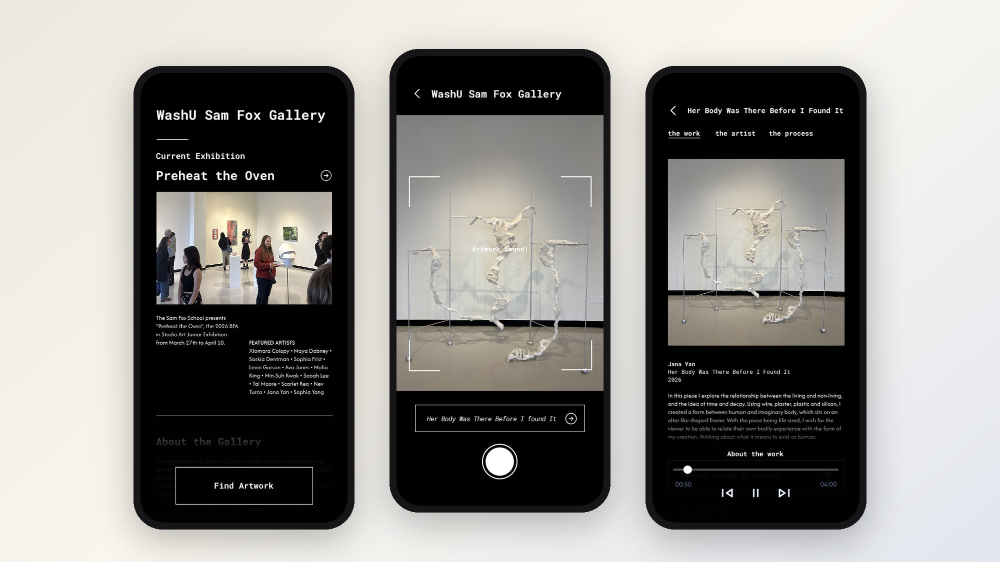
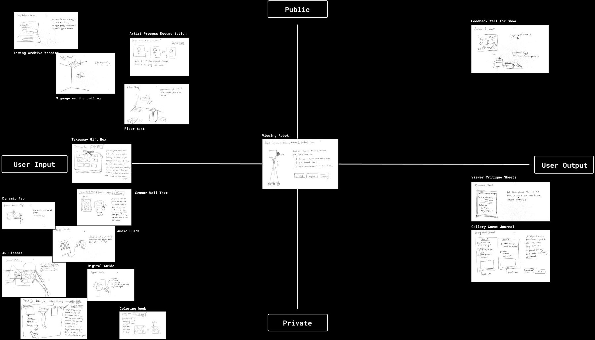
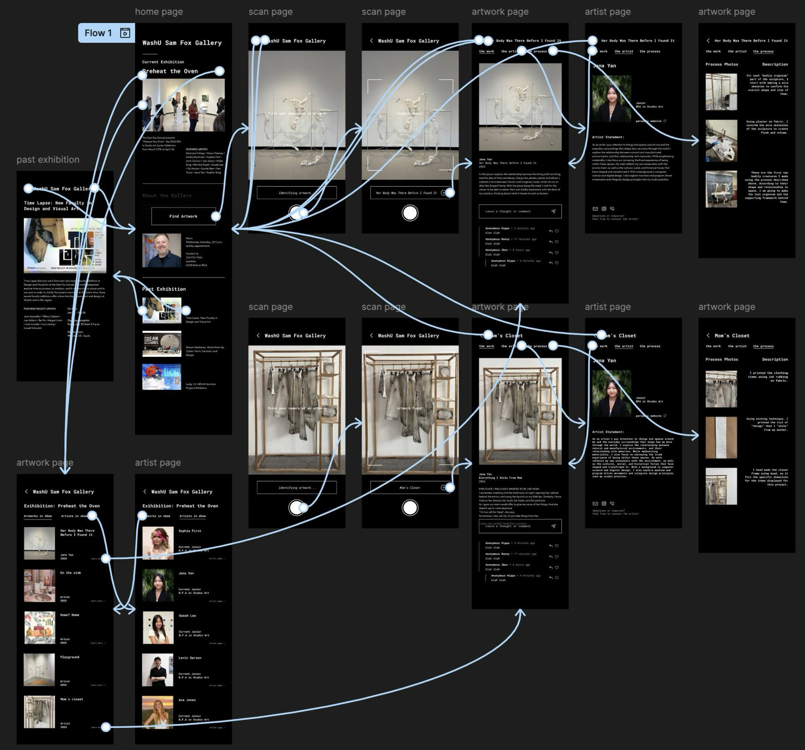
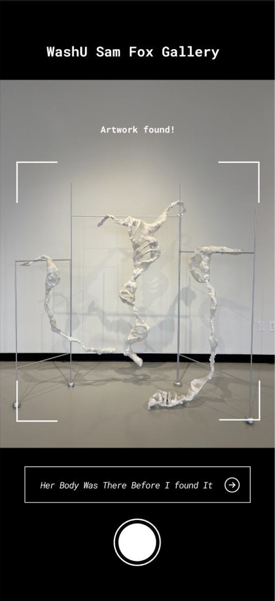
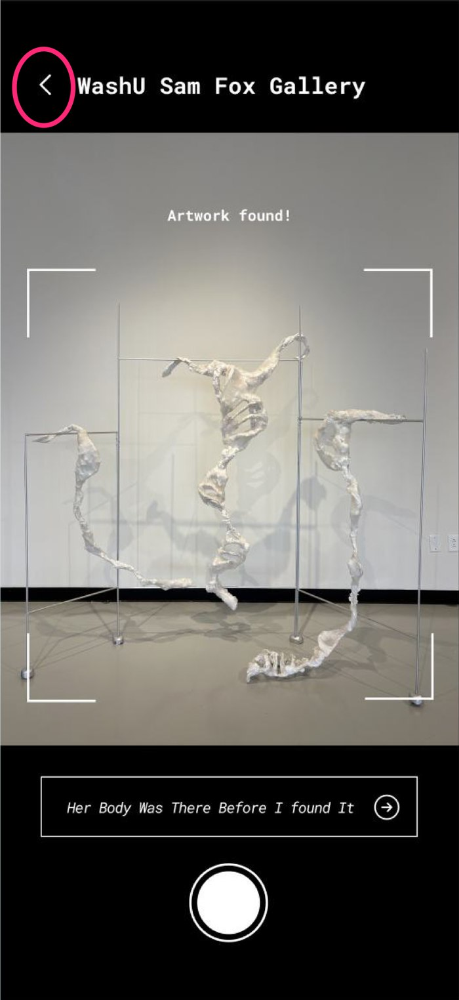
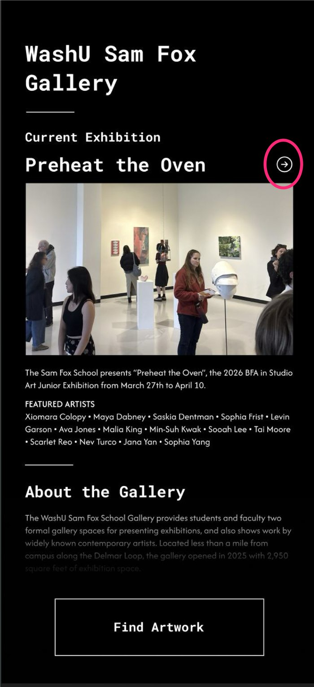

Gallery Guide lets visitors point their phone at an artwork to hear about it, meet the artist and see how it was made

A new campus gallery with strong shows, but very little information around the work, in the room or online.
- 10 of 11 visitors we surveyed expected more wall labels
- The gallery prefers minimal wall text; extra details sit in printed binders that are hard to navigate
- It has no website of its own, so shows aren’t archived and individual works aren’t documented
A guide on your phone that adds context you can opt into, without putting more text on the walls.
Point the camera at a work to find it, listen to a short description, then go deeper into the artist and the process. Past exhibitions live in the same place, so the gallery finally has an archive.
The WashU Sam Fox School Gallery
The gallery opened in 2025 on the Delmar Loop, less than a mile from campus, replacing the Des Lee Gallery downtown. It shows student work (junior, senior and MFA exhibitions), faculty work and widely known contemporary artists, for an audience of students, faculty, families, art enthusiasts, St. Louis locals and people walking by on Delmar.
We started from two questions: how could the gallery give visitors a better way to engage with the shows, and how could it help artists show their work to a wider audience?
Strong space, thin digital layer
We interviewed the gallery manager. The gallery’s first job is educational: giving students a real exhibition experience and exposure to professional practice. It is also Sam Fox’s public face on Delmar, with more walk-in visitors than the old location.
The physical space and the curation are strong. The digital and interactive side lags behind, with little budget or technology to support it.
- Poor documentation & archivingLimited photography budget, no record of individual works, and Instagram holds only a partial record
- Weak digital experienceNo dedicated website; the school page is run by the marketing team, so it can’t archive shows or feature single works
- Information access is frictionalMinimal wall text is often preferred, so details go into printed binders and sheets that are hard to navigate
Visitors could find the work. They wanted the story behind it.
We surveyed 11 gallery visitors and 9 student artists who had shown work there. Most visitors found the space easy to get around: 9 of 11 rated navigation 1 or 2 out of 5, where 1 is easy. What they missed was context.
Did you understand the artworks as much as you wished?
Which describes your visit?
What did you wish you knew more about?
From the artists
said professional documentation of their work would help, most of all for portfolios
are comfortable with others photographing and posting their work, as long as they’re told first
want the public to know more about their work and practice beyond the show
The tension: the gallery wants quiet walls, and visitors want more context. A phone can hold that context without touching the walls.
Three kinds of people in the room
Student artist
Wants exposure and professional experience, needs documentation for a portfolio, and is still learning how exhibitions work.
Casual visitor
Curious but not deeply informed, often walking in off Delmar. Needs guidance and context, with a short attention span.
Art enthusiast
Wants deeper meaning and context, and is interested in process and concepts.
The opportunity we chose: an accessible layer of interpretation that adds context without disrupting the gallery’s look, and that people can choose to use.
From a sketch map to three directions
We sketched ideas from feedback walls and guest journals to AR glasses, a viewing robot and floor text, and mapped them from user input to user output, and from public to private.

Archive website
An online record of each show, with photos, video or a virtual gallery. Artists are told before anything is posted.
kept: past exhibitionsNavigation & information
A booklet or projected wall text that connects each work to its artist, description and material.
kept: artwork pagesAudio
Audio appears on your phone when you get close to a work, and you decide how much you hear, brief or detailed.
kept: the coreThe final idea combined all three: scan an artwork with the camera to get its audio, a short “about the work” and the artist’s intro, with the artist statement, website and process one tap away.
Scan, listen, go deeper
We built the flow in Figma around two of my own pieces from the junior show, so every screen had real content.
- Camera scan: point at a work and the app recognizes it
- The work: title, a short description and a playable “about the work” audio
- The artist: statement, personal website and ways to get in touch
- The process: progress photos with short notes
- Home: the current exhibition with its artworks and artists, plus past exhibitions

What testing changed
Testers got lost moving between pages. It wasn’t clear which text was a button or where it led, or whether the page title doubled as a home or back button. The artwork archive was hard to find. Testers also asked for ways to comment, to contact the artist and to see past exhibitions.



Testing also added comments on each artwork, contact links on the artist page and a past exhibitions section on home.
Click through the prototype
I rebuilt the final design as a working web prototype. The camera is simulated with photos from the show, and two artworks have full pages.
- Find ArtworkThe camera finds the sculpture in front of you. Tap its name.
- ListenPress play under “About the work” to hear the description read aloud.
- Go deeperSwitch to the artist and the process tabs.
- Join inLeave a comment, or tap the shutter to scan the next artwork.
Eight weeks, March to April
- Secondary researchMar 2–16
- Rough research questionMar 16–23
- Interviews & surveysMar 16–25
- Research synthesisMar 23–30
- Ideation, user journey, personaMar 25–Apr 1
- Final solution & prototypingMar 30–Apr 8
- User testing, final productApr 6–20
- Final presentationApr 13–28
Walk through the gallery from here
This page is a snapshot of the process. I’m happy to share the full research.
Open the prototype Email me